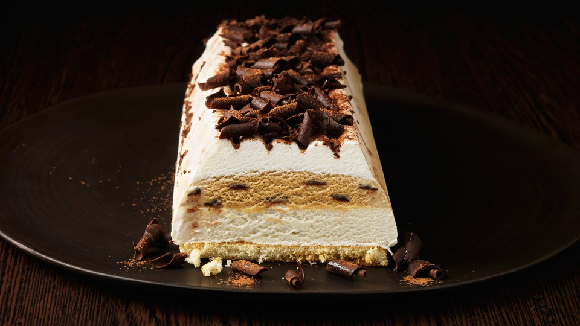

Tiramisú de Turrón
05/01/2020 Puedes acompañar este tiramisú con chocolate caliente, frutos secos, frutas, e incluso un rico bizcocho. Tapia Pedro Nicolas
Este plato, está cocinado con una base de Postres y pertenece a los platos de la cocina Tradicional. Por regla general se consume, principalmente, durante Todo el año, y se suele servir a los comensales como Postre.
En un cazo ponemos el agua con el azúcar a hervir. Dejamos un minuto que hierva y retiramos.
Hidratamos la gelatina siguiendo las instrucciones del fabricante. Montamos las yemas y le incorporamos el almíbar primero. Añadimos la gelatina derretida en el microondas. Mezclamos bien.
Aparte mezclamos la nata con el queso. Batimos hasta que quede semimontado. Agregamos la crema de yemas. Mezclamos bien. Separamos la crema resultante en dos.
Una, la guardamos en la nevera. A la otra le añadimos una cucharada de cacao en polvo con café soluble mezclado, al gusto. Mezclamos bien e introducimos también en la nevera. A la hora de servir nos ayudamos de unos moldes y colocamos un poco de cada mezcla.